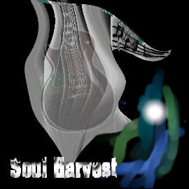

Album: First Crops EP
Lyrics by: Jason St-Cyr
Music by: Jason St-Cyr
Performed by: Soul Harvest
Recorded: Summer 1998 in Orleans, Ontario

|
Clip
|

|
Download [N/A]
|
|
|
CD INFO
|
|
Lyrics and Story
"Another day I spent without you my dear
And I felt just fine
I won't be breakin' up over this
I won't be crying
Probably the worst and best use of simple lyrics in songwriter Jason St-Cyr's repertoire is the song Stumbled. While the use of the "3rd verse same as the first" method is unoriginal, without it the song would lack it's cyclical nature which truly highlights the tale being told. As in all of his lyrics, the song attempts to tell a tale we can all identify with. In this track, the story follows the tale of a man trying to get away from some unknown woman, only to achieve it and realise his loss. The change from pursued to pursuer is highlighted by the first and third verses which switch roles on the male character.
This track, recorded for the "First Crops EP" was re-recorded for "The Rift" in August 1999. You can download the new track from Soul Harvest's Riffage.com web page, or you can contact the band to order the new CD.
|